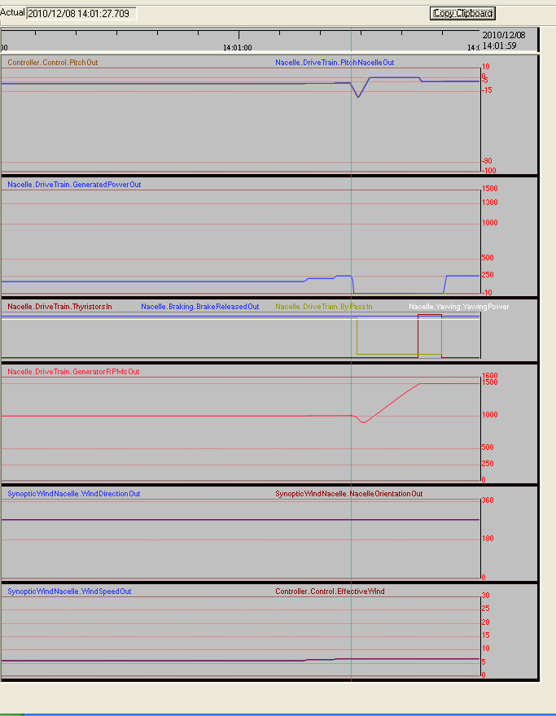

1.Coming from the previous section you will have the Wind Turbine connected in Small with 6,2 m/s wind. If not, follow the first 6 steps of the instructions in the section "Setting the conditions for a Wind Turbine to start operation" setting a wind of 6.0 m/s. and read the two tips in the previous section
2.With default parameters you will see approximately 1005,8 rpms in the rotor.
3.With the ArrowUp change the wind to 6.4 m/s , wait a few seconds and the "RPMs Gen" slow down a little, as well as the Gen Power, and nothing more happens. Now change to 6.7 m/s, after a few seconds the Controller sequences a change to Large as you can see in the strip recorder similar to the shown in the next figure.The detailed sequence is:
1.Bypass will be set to Off, consequently Production will drop to 0.
2.Generator will be disconnected of the 6 poles ("Small Connection")
3.Generator will be connected as 4 poles ("Large Connection")
4.Pitch will grow to accelerate the rotor.
5.RPMs will start ramping up to 1500 rpms.
6.Near by the 1500 the Thyristors will start conducting again to achieve a soft Grid coupling.
7.After 3 seconds (approx.) the Bypass will be set On again, so the Wind Turbine will be again in production.
Repeat these two sections by changing Large to Small and vice-versa with different values of wind around the thresholds you know, and observe the different signals involved in the process (Bypass, Thyristors, Pitch, RPMs, etc. ..) in the StripRecorder, Control Terminal, Synoptic Wind Nacelle or Synoptic Drive Train, internal view or farm view.
